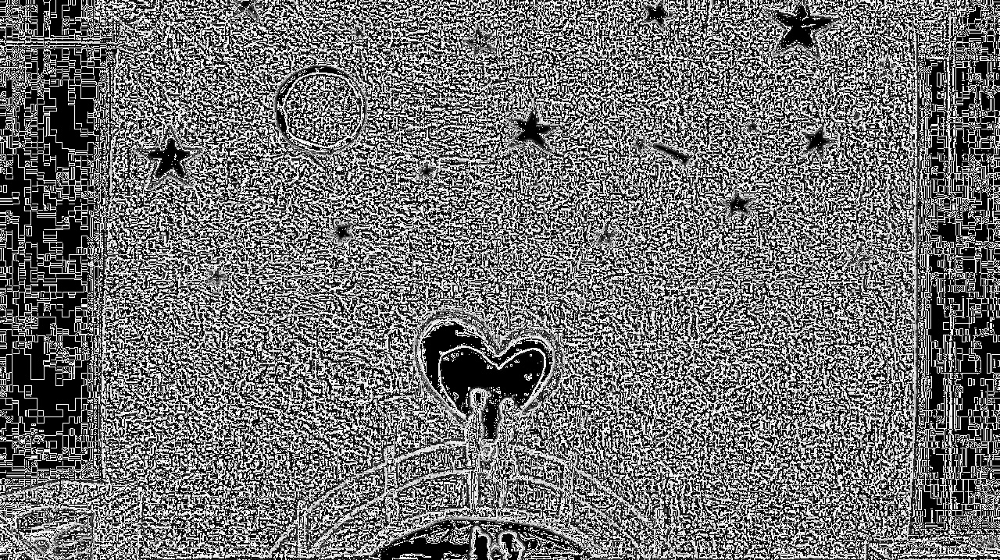
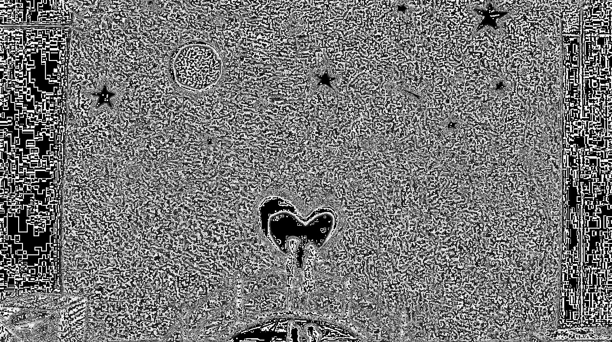
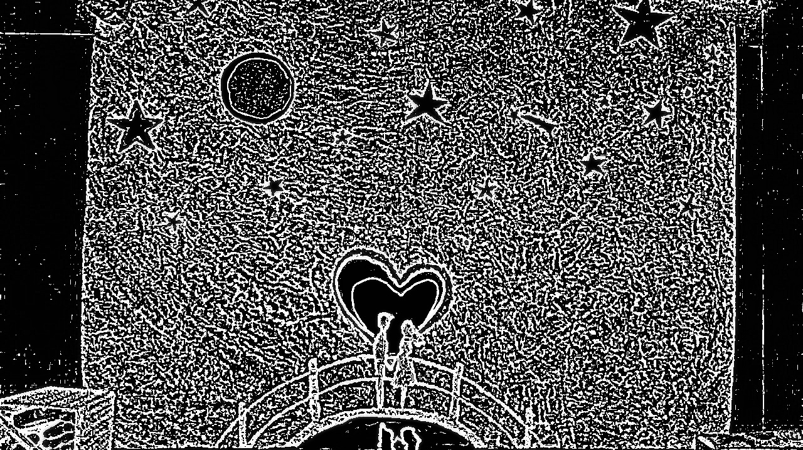

High pass filter
A high pass filter (HPF) is a filter that examines a region of an image and boosts the intensity of certain pixels based on the difference in the intensity with the surrounding pixels
Take, for example, the following kernel:
[[0, -0.25, 0],
[-0.25, 1, -0.25],
[0, -0.25, 0]]
A kernel is a set of weights that are applied to a region in a source image to generate a single pixel in the destination image. For example, a ksize of 7 implies that 49 (7 x 7) source pixels are considered in generating each destination pixel. We can think of a kernel as a piece of frosted glass moving over the source image and letting through a diffused blend of the source’s light.
After calculating the sum of differences of the intensities of the central pixel compared to all the immediate neighbors, the intensity of the central pixel will be boosted (or not) if a high level of changes are found. In other words, if a pixel stands out from the surrounding pixels, it will get boosted.
This is particularly effective in edge detection, where a common form of HPF called high boost filter is used
Both high pass and low pass filters use a property called radius, which extends the area of the neighbors involved in the filter calculation.
Example :
# Import Necessary library
import cv2
import numpy as np
from scipy import ndimage
# Create a 3x3 Kernel
kernel_3x3 = np.array(
[[-1, -1, -1],
[-1, 8, -1],
[-1, -1, -1]])
# Create a 5x5 Kernel
kernel_5x5 = np.array(
[[-1, -1, -1, -1, -1],
[-1, 1, 2, 1, -1],
[-1, 2, 4, 2, -1],
[-1, 1, 2, 1, -1],
[-1, -1, -1, -1, -1]])
# Read MyPic.jpg from system as grayscale
img = cv2.imread("MyPic.jpg", 0)
# Apply convolution between image and kernel_3x3
k3 = ndimage.convolve(img, kernel_3x3)
# Apply convolution between image and kernel_5x5
k5 = ndimage.convolve(img, kernel_5x5)
# Apply GaussianBlur
blurred = cv2.GaussianBlur(img, (11,11), 0)
# Create Gaussian HPF
g_hpf = img - blurred
# Store all the image
cv2.imwrite("3x3.jpg", k3)
cv2.imwrite("5x5.jpg", k5)
cv2.imwrite("g_hpf.jpg", g_hpf)
Our input Image:

Output Image for kernel_3x3,kernel_5x5 and g_hpf respectively
  After the initial imports, we define a 3x3 kernel and a 5x5 kernel, and then we load the image in grayscale. Normally, the majority of image processing is done with NumPy; however, in this particular case, we want to “convolve” an image with a given kernel and NumPy happens to only accept one-dimensional arrays.